<title>AAPS Kusi Watch Faces</title>
<meta name="claude:viewport-fit-sides" content="cover">
<link rel="stylesheet" href="https://fonts.googleapis.com/css2?family=Sora:wght@400;600;700&family=IBM+Plex+Mono:wght@400;500&display=swap">
<style>
  /* Layout: a dark "watch bench" — round dials on a graphite ground, grouped by stage (now → concepts → builds). */
  :root {
    --bg: #0e1013; --panel: #161a1f; --line: #262c34; --fg: #e8edf2; --muted: #8b96a3;
    --accent: #3ad6a0; --halo: #4aa3ff; --warn: #f2b84b;
    --display: "Sora", "Avenir Next", "Segoe UI", sans-serif;
    --mono: "IBM Plex Mono", ui-monospace, "SF Mono", Menlo, monospace;
    color-scheme: dark;
  }
  @media (prefers-color-scheme: light) { :root:not([data-theme="dark"]) {
    --bg: #eef1f4; --panel: #ffffff; --line: #d6dce3; --fg: #12161b; --muted: #5c6773;
    --accent: #0f9e6e; --halo: #1f6fd1; --warn: #a86d00; color-scheme: light; } }
  :root[data-theme="light"] {
    --bg: #eef1f4; --panel: #ffffff; --line: #d6dce3; --fg: #12161b; --muted: #5c6773;
    --accent: #0f9e6e; --halo: #1f6fd1; --warn: #a86d00; color-scheme: light; }
  body { background: var(--bg); color: var(--fg); font-family: var(--display); }
  main { max-width: 1100px; margin: 0 auto; padding-block: 28px 56px;
    padding-left: max(16px, env(safe-area-inset-left, 0px)); padding-right: max(16px, env(safe-area-inset-right, 0px));
    display: grid; gap: 40px; }
  header h1 { margin: 0; font-size: clamp(26px, 4vw, 38px); font-weight: 700; letter-spacing: -0.01em; text-wrap: balance; }
  header p { margin: 8px 0 0; color: var(--muted); max-width: 65ch; line-height: 1.5; }
  .stamp { font-family: var(--mono); font-size: 12px; color: var(--muted); letter-spacing: 0.04em; }
  section { display: grid; gap: 16px; }
  section > h2 { margin: 0; font-size: 13px; text-transform: uppercase; letter-spacing: 0.12em; color: var(--muted); font-weight: 600; }
  .row { display: grid; grid-template-columns: repeat(auto-fill, minmax(240px, 1fr)); gap: 20px; }
  figure { margin: 0; background: var(--panel); border: 1px solid var(--line); border-radius: 18px; padding: 18px; display: grid; gap: 12px; justify-items: center; min-width: 0; }
  figure img { width: 100%; max-width: 300px; aspect-ratio: 1; border-radius: 50%; background: #000; box-shadow: 0 0 0 6px #1d2128, 0 10px 30px rgba(0,0,0,.35); }
  figcaption { width: 100%; display: grid; gap: 4px; }
  figcaption b { font-size: 15px; }
  figcaption span { color: var(--muted); font-size: 13px; line-height: 1.45; }
  .pick { border-color: var(--accent); }
  .tag { justify-self: start; font-family: var(--mono); font-size: 11px; padding: 3px 8px; border-radius: 999px; border: 1px solid var(--accent); color: var(--accent); }
  .tag.amber { border-color: var(--warn); color: var(--warn); }
  .empty { background: var(--panel); border: 1px dashed var(--line); border-radius: 18px; padding: 22px; color: var(--muted); line-height: 1.5; }
</style>

<main>
  <header>
    <h1>AAPS Kusi watch faces</h1>
    <p>Your current custom face next to the three concepts for a second, calmer face, and the builds as they land on the Galaxy Watch5 Pro. All values are your real ones from 00:40: BG 9.4 mmol/L →, IOB 2.53 U, TT 5.6.</p>
    <div class="stamp">Updated 17 Oct 2026 · 00:55 · branch feature/kusi/watchface-fancy</div>
  </header>

  <section>
    <h2>On the watch now</h2>
    <div class="row">
      <figure>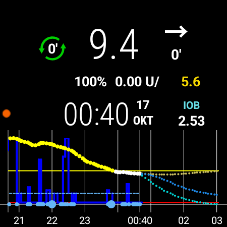
        <figcaption><b>Current face (CWF)</b><span>All the data and a big 6 h graph, but crowded. Basal reads "0.00 U/" because the text is cut off. Empty space on the left.</span></figcaption></figure>
      <figure>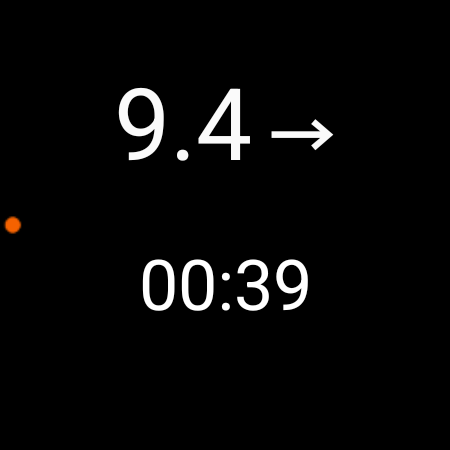
        <figcaption><b>Current face, ambient</b><span>Always-on view: BG, arrow and time only.</span></figcaption></figure>
    </div>
  </section>

  <section>
    <h2>Concepts for the second face</h2>
    <div class="row">
      <figure class="pick">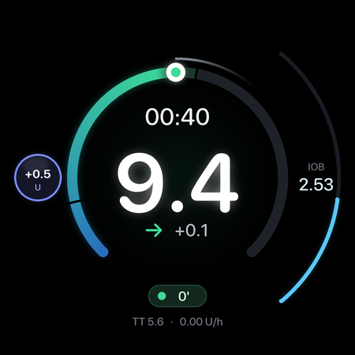
        <figcaption><span class="tag">Picked</span><b>Halo</b><span>BG inside a glowing range ring, thin IOB arc, loop pill, bolus ball at 9 o'clock. Being built, with BG age and a 3-colour loop state added from Glass.</span></figcaption></figure>
      <figure>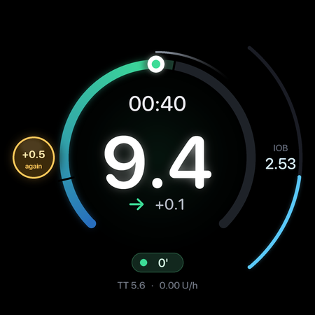
        <figcaption><span class="tag amber">After 1st tap</span><b>Halo, bolus ball armed</b><span>First tap turns the ball amber ("+0.5 again"). The second tap only sends a request; you still confirm on the standard screen.</span></figcaption></figure>
      <figure>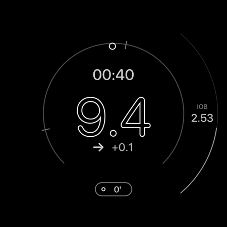
        <figcaption><b>Halo, ambient</b><span>Outlines only. The bolus ball is gone, so nothing can be tapped by accident.</span></figcaption></figure>
      <figure>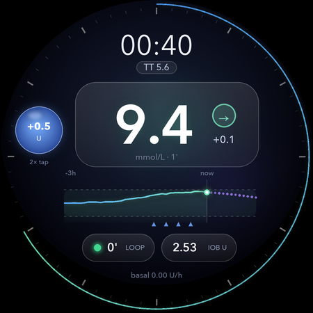
        <figcaption><b>Glass</b><span>Frosted cards, 3 h sparkline with prediction, LOOP and IOB pills, blue bolus ball.</span></figcaption></figure>
      <figure>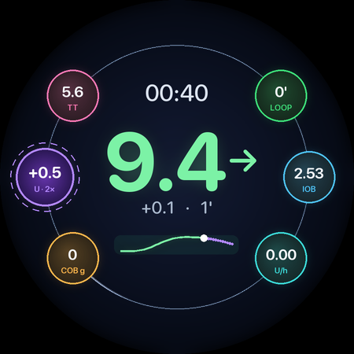
        <figcaption><b>Orbit</b><span>BG in the centre, six coloured status balls around it, bolus ball on the left.</span></figcaption></figure>
      <figure>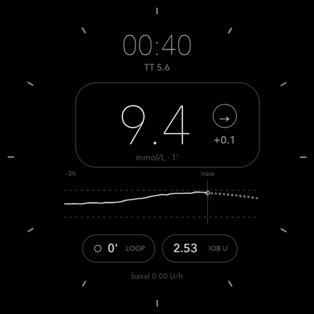
        <figcaption><b>Glass, ambient</b><span>Thin lines, no fills.</span></figcaption></figure>
    </div>
  </section>

  <section>
    <h2>Final designs: AAPS Glass and AAPS Orbit</h2>
    <figure style="justify-items:stretch">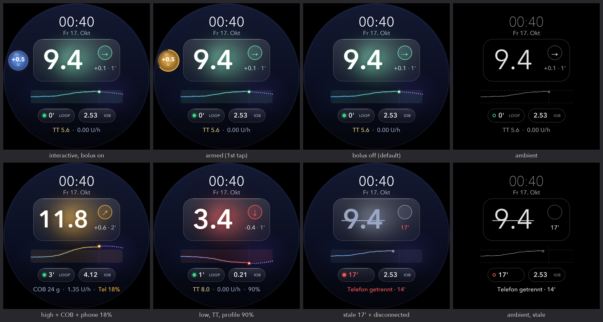
      <figcaption><b>AAPS Glass</b><span>Frosted BG card on a colour aurora: teal in range, amber high, red low, grey when the data is old (value struck through). Time and "Fr 17. Okt" on top, 3 h sparkline with prediction, LOOP and IOB pills, footer with TT, basal, COB, profile % and phone battery only when relevant. "Telefon getrennt" in red when the phone has been silent for 12 min.</span></figcaption></figure>
    <figure style="justify-items:stretch">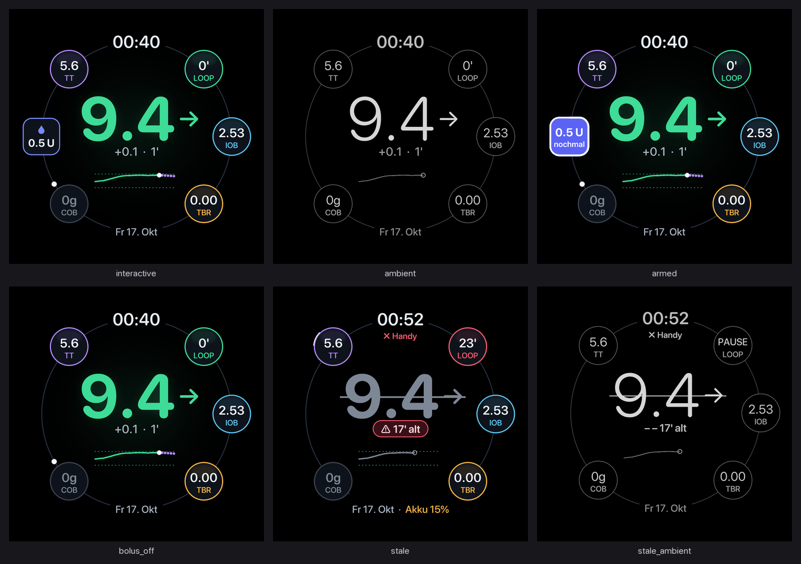
      <figcaption><b>AAPS Orbit</b><span>BG large in its range colour with delta and age, five status balls on the orbit (TT, LOOP, IOB, COB, TBR), date at the bottom. Bolus button at 9 o'clock ("0.5 U", "nochmal" after the first tap). Old data: value struck through, "17' alt" warning, "Handy" crossed out when the phone is gone.</span></figcaption></figure>
  </section>

  <section>
    <h2>How Halo gets built</h2>
    <figure style="justify-items:stretch">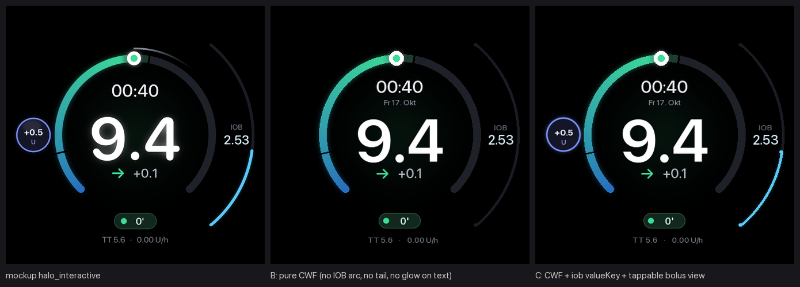
      <figcaption><b>Mockup vs. CWF zip vs. hybrid</b><span>A CWF zip could not do the bolus tap, the ambient design or the IOB arc, and importing it would replace your current face. Halo is therefore built as its own native face (judges: 8 / 6 / 8.5 for looks, 8 / 3 / 5 for bolus safety and ambient). Glass and Orbit follow the same way.</span></figcaption></figure>
  </section>

  <section id="builds">
    <h2>Builds on the watch</h2>
    <div class="empty">AAPS Halo is being finished: renamed, German date ("Fr 17. Okt"), 20 review fixes, bolus ball 0.5 U off by default. Screenshots from the watch appear here after each install.</div>
  </section>
</main>
